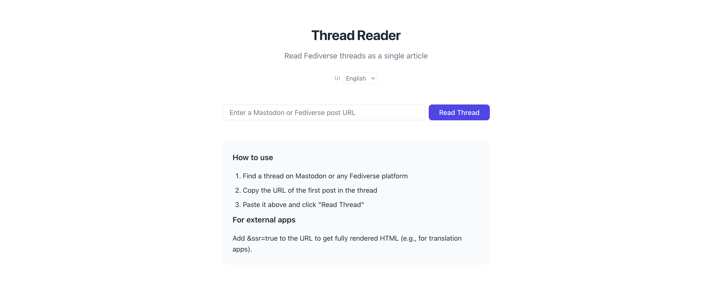
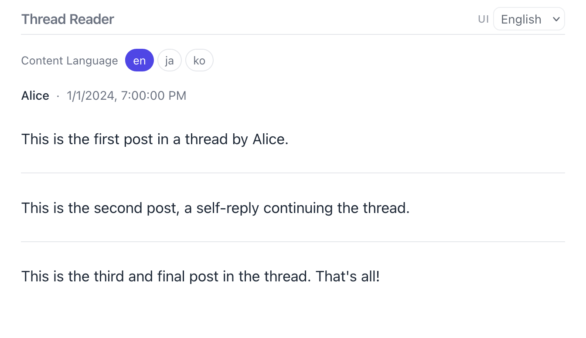
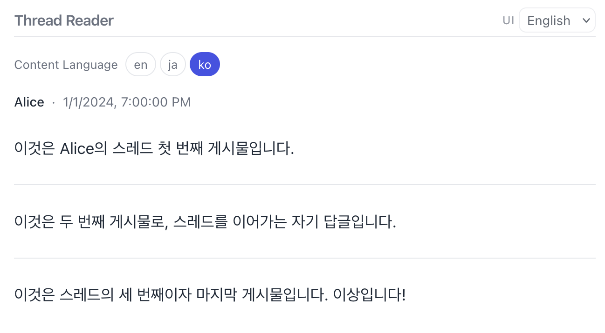

ap-thread-reader, ActivityPub-compatible Thread Reader
I have previously written a post about ap-thread-reader, and this article focuses on explaining its features[1].
ap-thread-reader is a tool that helps you view long posts written as a series of replies—often due to character limits—on a single page.
As of the time of writing, you can access it at https://ap-thread-reader.fly.dev. By default, you will be greeted with the following page.

Enter the link to the first post of the thread you would like to read into the
text box, and you will be taken to a page that displays the entire thread.
Alternatively, you can navigate directly by entering a URL in the form of
https://ap-thread-reader.fly.dev/read?url=<url>. The ability to pass the
value as a query parameter is particularly useful when setting up shortcuts in
browsers such as Firefox.
As an example, I entered a link to a Note hosted on localhost. The result is three consecutive posts displayed as shown below.

You may notice Content Language along with options such as en, ja, and
ko appearing above the author and timestamp. This feature leverages the
contentMap provided by ActivityPub Object. If the content offers
multilingual support through contentMap, it will be reflected accordingly.
Selecting ko, for instance, will display the content as shown below. You can
also specify the language via the language URL query parameter (e.g.,
https://ap-thread-reader.fly.dev/read?url=<url>&language=ko). If
contentMap is not provided, the Content Language selection UI will not be
displayed.

By default, the client renders a loading animation first and then renders all
the content at once after the entire thread has been loaded. This approach can
be inconvenient when passing the page to a separate translation tool or similar
service. To address this, the ssr URL query parameter is provided, which
ensures that a fully rendered result is returned once the entire thread has
been loaded (e.g.,
https://ap-thread-reader.fly.dev/read?url=<url>&ssr=true).
Note: ap-thread-reader is licensed under AGPL-3.0, and the source code is available at https://github.com/moreal/ap-thread-reader.